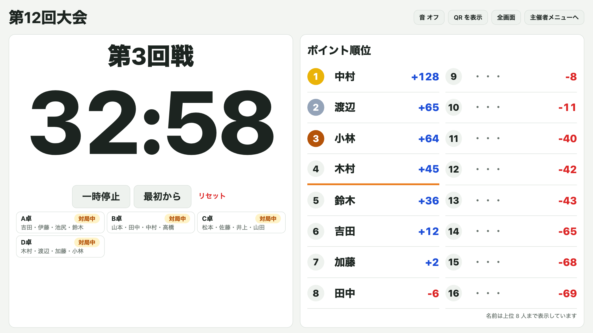
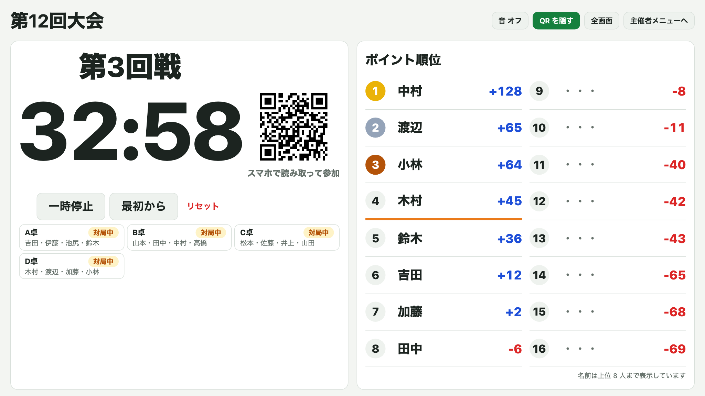

MAHJONG TOURNAMENT SCORE
麻雀大会スコア
使い方ガイド
点数の入力・ポイントの計算・順位・残り時間・精算までを、
スマホで済ませるための Web アプリです。
https://majan-taikai.pages.dev/
- このアプリでできること
- 主催者 大会を作る
- 主催者 大会当日の進め方
- 参加者 参加する
- 参加者 結果を入力する
- 順位を見る
- 大会が終わったら（最終結果・精算）
- よくある質問
1このアプリでできること
主催者は Google アカウントでログインして大会を作ります。参加者はログインなしで、共有された URL（QR コード）を開くだけで使えます。
| 場面 | できること |
|---|
| 大会を作る | 人数・参加者の名前・ルール（持ち点・ウマ・レート・打ち切り時間など）を設定。予選の卓割りは自動で作成 |
| 参加する | QR コードを読み取って自分の名前をタップするだけ。「第3回戦 あなたは A 卓」と自分の卓が出る |
| 結果を入力する | 卓の 4 人の素点を入れるだけで、+58 / −19 などのポイントを自動計算。3 人分を入れると 4 人目は自動で入る |
| 順位を見る | 自分の順位・トップとの差・決勝 A 卓ラインまでの差、全体のポイント順位、各卓の結果 |
| 時間を管理する | 打ち切りタイマー（初期値 50 分）。会場のモニター用の「会場表示」と、参加者のスマホにも残り時間を表示 |
| 終わったら | 決勝卓の着順で最終結果を表示。場代・チップを入れると一人ひとりの支払い額が確定。結果をマークダウンで書き出せる |
ポイント
計算は「25,000 点持ち 30,000 点返し・百の位は五捨六入・ウマ・オカ」です。ウマやレートは大会ごとに変えられます。
2 主催者大会を作る
スマホでも PC でも作れます。全部で 4 ステップです。
1Google でログイン
https://majan-taikai.pages.dev/ を開く- 「Google でログイン」を押して、Google アカウントでログイン
ポイント
作った大会は主催者のアカウントにひもづきます。会社・個人どちらのアドレスでもかまいません。
注意
何も起きないときは、ブラウザのポップアップブロックを一時的にオフにしてください。
2新しい大会を作る
「＋ 新しい大会を作る」を押します。下の「これまでの大会」から、前に作った大会の主催者メニューを開けます。
3人数・大会名・開催日
- 人数を選ぶ（4 の倍数。ほかの人数は下の欄に入力）
- 大会名と開催日を入れる
- 「次へ（参加者）」
4参加者の名前
- 欄に名前を入れて「追加」。
田中、加藤、佐藤 のように、改行・読点・カンマ・引用符など区切り方は自由
- テキストファイルやマークダウンの表（「名前」列）も読み込めます
- 2 回目以降は「過去の参加者から選ぶ」でタップして追加できます
- 名前の「×」で外せます
コツ
名前を入れるのが面倒なときは「残り ◯ 人を仮の名前（ゲスト1…）で埋める」。あとで主催者メニューの「設定」から本名に直せます。
5ルール
| 項目 | 内容 |
|---|
| 持ち点・返し | オカ（トップ賞）は自動で計算 |
| ウマ | 10-30 / 10-20 / 5-10 / なし から選ぶ |
| 予選の回数 | 4〜8 回から選ぶ。決勝あり / なし |
| レート | 1000 点（1pt）あたり 50 円（点5）/ 100 円（点10）など |
| 場代 | 「精算で割り勘」か「事前に徴収済み」 |
| 打ち切り時間 | 1 回戦の時間（初期値 50 分） |
| ルール文 | 罰符・アガリ放棄など、参加者の「ルール」画面に出る文 |
コツ
2 回目以降は「前に作った大会のルールを使う（任意）」から、前回のルールをまるごとコピーできます。
6確認して作成
内容を確認して「この内容で大会を作る」。予選の卓割りは、同じ人となるべく当たらず、同じ卓に座り続けないように自動で作られます。
注意
予選の回数は作成後には変えられません。名前・ルール・場代などは、あとから主催者メニューの「設定」で直せます。
7参加者に共有
QR コードと URL が出ます。QR コードを見せるか、「URL をコピー」してチャットに貼ってください。
ポイント
この画面は、主催者メニューの「共有」タブからいつでも開けます。
3 主催者大会当日の進め方
主催者メニューは「進行・設定・共有・精算」の 4 つのタブです。
1回戦のタイマーを開始する（進行タブ）
- 全卓がそろったら「第◯回戦 開始」を押す
- 残り時間が全員の画面に出ます
- 必要に応じて「一時停止 / 再開」「最初から」「リセット（開始前に戻す）」
下には回戦ごとの各卓の状態（入力済・対局中・これから）が出ます。卓を押すと、結果の入力・修正・削除ができます。
ポイント
予選がすべて終わると、ここに「決勝の卓を確定」が出ます。予選の順位で上位 4 人が A 卓、次の 4 人が B 卓…になります。
2会場表示（モニターに出す画面）
進行タブの「会場表示を開く」で、会場の PC やモニター向けの画面が開きます。右上の「全画面」で大きく出せます。

- 今の回戦・残り時間・今の回戦の各卓の状態・ポイント順位を 1 画面で表示
- 名前を出すのは上位 8 人まで。それより下は順位とポイントだけです
- 「音 オン」にすると、残り 5 分と時間切れでチャイムが鳴ります
- 主催者がログインしている PC なら、ここからタイマーを操作できます
3会場表示に QR コードを出す
「QR を表示」で参加用の QR コードが出ます。参加者が読み取り終わったら「QR を隠す」で戻せます。

4名前やルールを直す（設定タブ）
- 参加者の名前（ゲスト1 などを本名に）
- ウマ・レート・場代の扱い・打ち切り時間・ルール文
「設定を保存」でポイントは新しいルールで計算し直されます。
4 参加者参加する
ログインは不要です。主催者から届いた QR コードか URL を開くだけです。
1自分の名前をタップ
名前の一覧から自分をタップします。スマホに記憶されるので、次に開いたときは選び直す必要はありません。
2ホームで自分の卓を確認
- 「第3回戦 あなたは A 卓」と同じ卓のメンバー
- 残り時間（主催者がタイマーを開始したとき）
- 今の順位・合計ポイント・トップとの差・決勝 A 卓ラインまでの差
対局が終わったら、トップの人が「結果を入力する」を押します。
3予定・成績・名前の修正
- 「あなたの予定と成績」で、全回戦の卓と着順・ポイントが見られます
- 「ルールを見る」で大会のルール
- 名前を選び間違えたら「名前を選び直す」
- 名前の表記が違うときは「自分の名前を直す」
5 参加者結果を入力する
1 卓につき 1 人（トップの人）が入力します。入力すると、全員の画面にすぐ反映されます。
14 人の素点を入れる
- 卓の 4 人の名前の横に、点数を百点単位で入れる（32,500 点 →
325）
- マイナスのときは左の「＋」を押して「−」に切り替える
- 3 人分を入れると、4 人目は自動で入る（「自動」の印。手で直すこともできる）
- 合計が 100,000 点で「OK」になったら「確認して保存」→「保存する」
ポイント
右側に着順とポイント（+58 など）が自動で出ます。
注意
同じ卓をほかの人が先に保存していたときは、保存できずにお知らせが出ます。入力済みの結果を確認してください。直したいときは主催者に伝えてください。
2同点のとき
- 2 人が同点なら「◯◯ を上に」のボタンで、上の着順にする人を選ぶ
- 3 人以上が同点なら「1 番目は ◯◯」→「2 番目は ◯◯」と、上から順番にタップ
順番を選ぶまでは保存できません。「同点の順番を選び直す」でやり直せます。
6順位を見る
下のタブの「全体順位」から見られます。
1ポイント順位
- 全員の順位・合計ポイント・トップとの差
- オレンジの線より上が、決勝 A 卓に入れる順位（予選中）
- 上の欄で「予選 2 回戦終了時」など、途中の時点の順位に切り替えられます
- 名前を押すと、回戦ごとのポイントが出ます
2卓・結果
回戦ごとの卓割りと、各卓の着順・素点（千点単位）・ポイントが見られます。自分の卓はオレンジの枠です。
7大会が終わったら（最終結果・精算）
1最終結果
全回戦が終わると、ホームに「あなたは ◯位」と最終結果が出ます。
ポイント
最終結果は決勝卓の着順で決まります。A 卓の 1 着が優勝、2 着が準優勝…、B 卓の 1 着が 5 位…です。お金の精算はポイントで計算します。
2最終結果の一覧
「全体順位」の「最終結果」で全員の最終順位が見られます。右の「ポイント順位」と見比べられます。
3精算（参加者）
- 下のタブの「精算」で、自分のチップ枚数を入れて保存（増えた枚数はプラス、減った枚数はマイナス）
- 全員の合計が 0 枚になると、支払い額が確定します
精算額 ＝ 合計ポイント × レート ＋ チップ × 単価 − 場代の割り勘。「金額を隠す」で金額を伏せられます。
4精算と書き出し（主催者）
- 場代の合計を入れて「保存」（事前に徴収済みなら不要）
- チップが全員そろったら「精算を確定する」
- 「結果を書き出す（マークダウン）」でファイルをダウンロード、またはコピー
コツ
書き出したマークダウンは、これまでの集計表と同じ並びです。Claude に渡すとスプレッドシートに転記できます。
8よくある質問
Q. 結果を間違えて保存してしまった
主催者に伝えてください。主催者は「進行」タブや「全体順位」の「卓・結果」から、どの卓の結果でも修正・削除できます。
Q. 名前を選び間違えた／名前の表記が違う
ホームのいちばん下の「名前を選び直す」で選び直せます。表記が違うときは「自分の名前を直す」で直せます（主催者が「設定」で直した名前が優先されます）。
Q. 画面が古いまま変わらない
ページを再読み込みしてください。開いたままのページは、アプリの更新前の内容のことがあります。
Q. 4 で割り切れない人数でもできる？
いまは 4 の倍数の人数だけです。足りない分は「仮の名前で埋める」で枠を作れます。
Q. 決勝 A 卓の境目で同点になったら？
名前順で決まります。気になる場合は、主催者が予選の結果を確認してから「決勝の卓を確定」してください。
Q. お金の計算を間違えないか心配
精算画面に「pt ◯円 ／ チップ ◯円 ／ 場代 −◯円」の内訳が出ます。全員の合計は、場代を除くとちょうど 0 円になります。